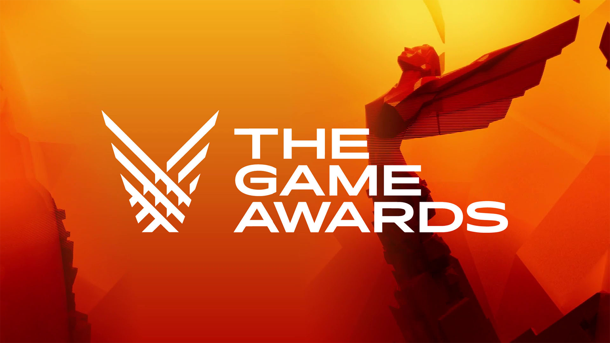
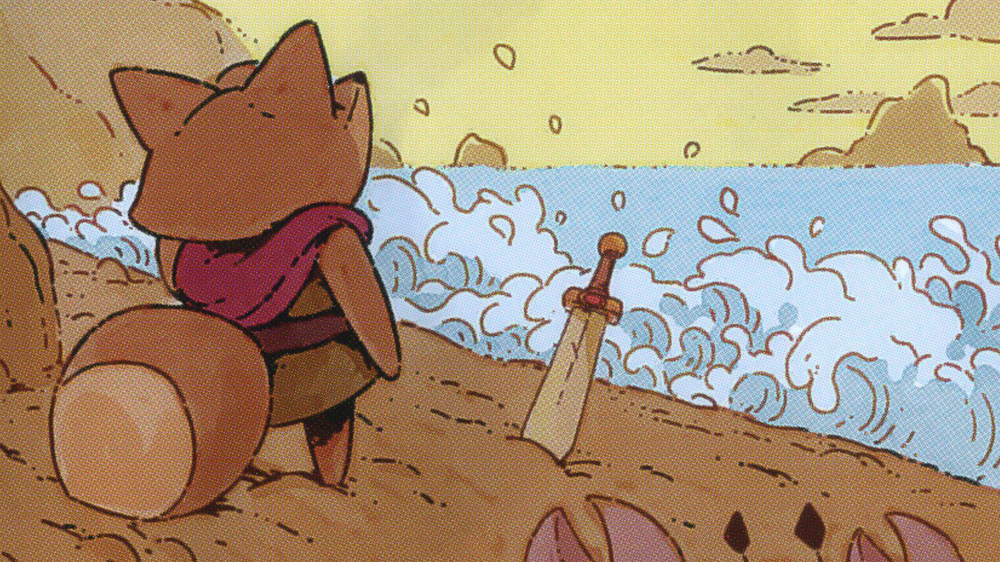
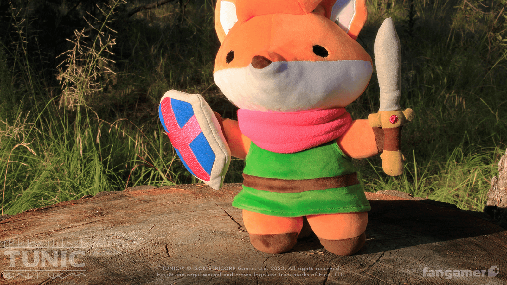
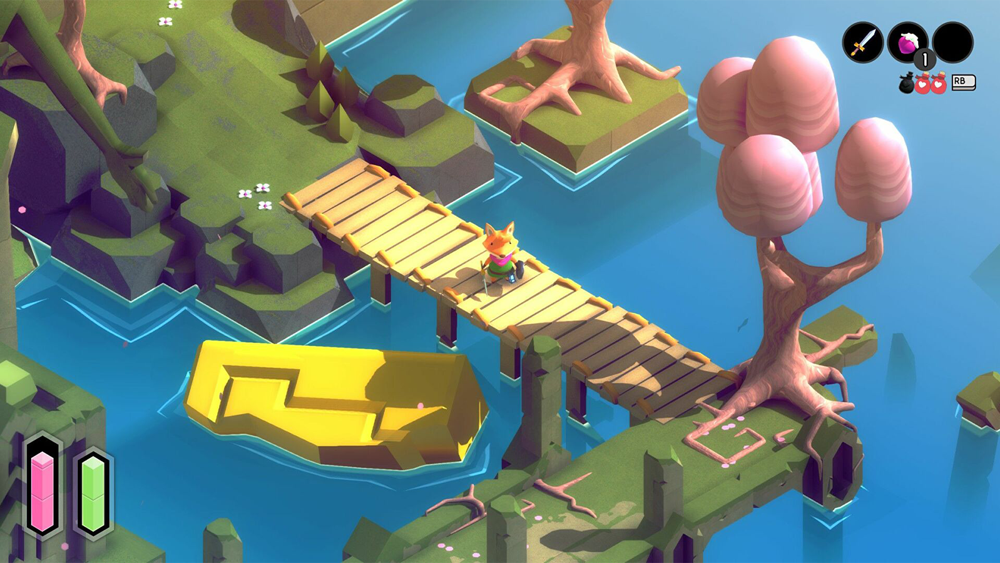

Novedades
-
 Game Awards
Nos enorgullece informar que TUNIC fue nominado a los Game Awards en la categoría de Mejor Indie.
-
 Parche 1.2
TUNIC lanza su segunda actualización buscando solventar las inquietudes de sus jugadores.
-
 Merchandising
¡Sorpresa! Tenemos nuevos productos como remeras y peluches de TUNIC solo para ti.
-
 Parche 1.1
Luego de un exitoso lanzamiento, seguimos buscando mejorar la experiencia de juego en TUNIC.